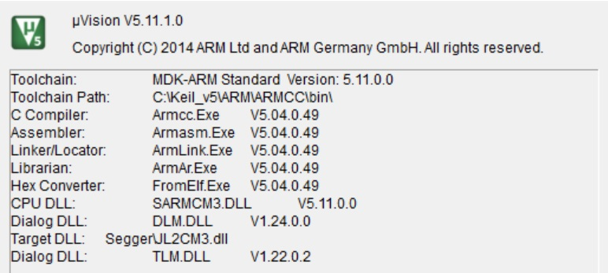

|
HS6621 Programming Guide
Bluetooth Low Energy (BLE) 5.0
|


|
|
HS6621 Programming Guide
Bluetooth Low Energy (BLE) 5.0
|
|
The following software and hardware will be needed during the development:
All applications in the SDK can be compiled and used with Keil Microcontroller Development Kit(MDK). So before starting software development, Keil should be obtained and installed correctly by users themselves, please visit www.keil.com for more information.
Tool chain version as below is used by Onmicro, and this version or higher is suggested to be used to avoid any compatible issue between the ROM executable programs and user applications.

J-Link is another prerequisite if more comprehensive debug method is desired besides the logging mechanism. For installing the SEGGER J-Link software, visit www.segger.com to download related software and documentation.
The driver should be correctly installed for the device to use the J-Link debugger with Keil MDK.
The SDK includes sample projects, documentation, and essential tools.
The EVB is designed to contain necessary hardware to evaluate, develop and debug user applications for HS6621.
The relationship between the hardware part and software component show as follow. The application developed with Keil could be downloaded into HS6621 EVB via J-Link, and debug via SWD interface.

Just double click HS6621 SDK executable file to install HS6621 SDK.
There are many examples in the directory "examples".
 1.8.17
1.8.17